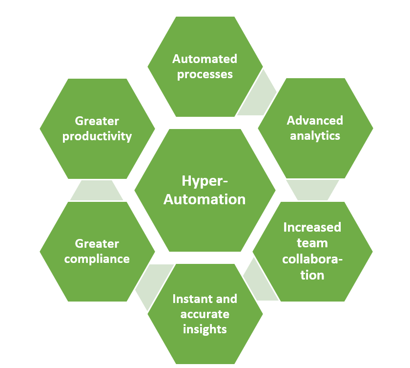

As defined by Gartner, hyper-automation “deals with the application of advanced technologies, including artificial intelligence (AI) and machine learning (ML), to increasingly automate processes and augment humans. Hyper-automation extends across a range of tools that can be automated, but also refers to the sophistication of the automation (i.e., discover, analyse, design, automate, measure, monitor, reassess.)”
Since we are talking about an array of technological terms, let’s define those that are important for hyper-automation to take place, namely: Robotic Process Automation: Robotic process automation is a robot that can perform low-level and repetitive tasks based on rule-based processes. With RPA, you can program the robot, or system, to produce outputs based on following a procedure repetitively. Robotic Process Automation: Robotic process automation is a robot that can perform low-level and repetitive tasks based on rule-based processes. With RPA, you can program the robot, or system, to produce outputs based on following a procedure repetitively. Machine Learning: As a branch of artificial intelligence, machine learning refers to systems that can use data to identify patterns and learn from them. Machine learning relies on little human intervention as it uses pattern recognition to know what to do next and optimise procedures. The system’s algorithm is first trained using training data and then creates a model for usage.
